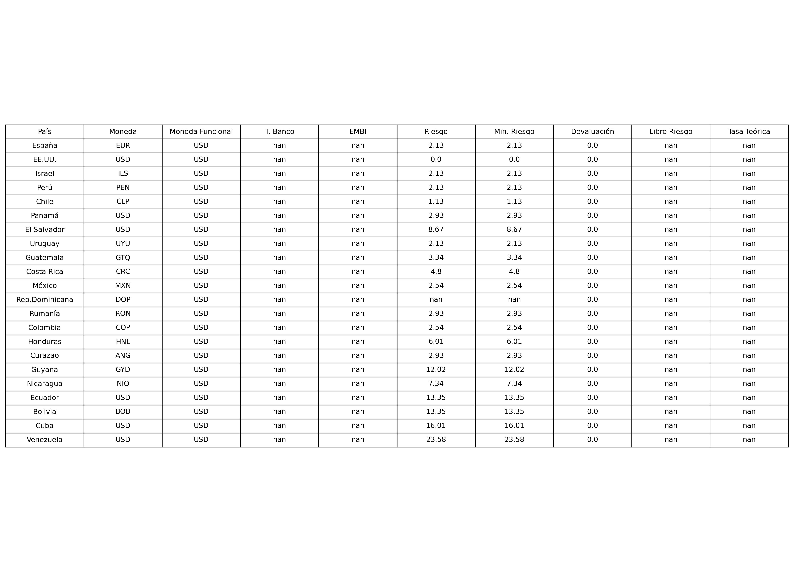

La Tasa Teórica de Descuento es un indicador desarrollado para evaluar el rendimiento exigido a una inversión en mercados internacionales, combinando componentes de riesgo-país, riesgo cambiario y el retorno libre de riesgo. Se guía de la metodología de Aswath Damodaran, profesor de Finanzas en NYU Stern, y utiliza sus estimaciones de Country Risk Premiums.
Visualización de tabla (actualizada automáticamente):
Componentes:
Esta metodología busca establecer una tasa mínima de retorno aceptable para inversiones ajustadas por riesgo-país, con sustento en teorías modernas de valoración y riesgo, siendo especialmente útil para mercados emergentes. El uso de tasas de descuento adecuadas es fundamental para determinar el valor presente de flujos futuros, estimar valoraciones de empresas y activos, y establecer criterios de rentabilidad en decisiones de inversión. Una tasa mal estimada puede resultar en decisiones financieras subóptimas, como sobrevaloración de activos o subestimación del riesgo asumido.
Las tasas utilizadas provienen de fuentes confiables y son actualizadas automáticamente a través de nuestra aplicación de datos Xerenity:
Estas integraciones permiten mantener la información siempre actualizada, evitando el riesgo de decisiones basadas en datos obsoletos, y permitiendo una valorización dinámica, precisa y trazable.